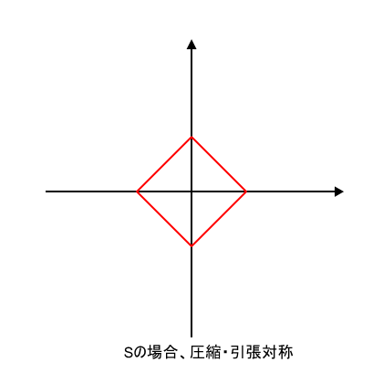

MN相関、MNインタラクションとは、軸力によって曲げ耐力が変化する関係性を表す言葉である。一般的性質として部材の軸耐力と曲げ耐力は強い相関性をもつため、設計上考慮する必要がある。主に軸力を受ける部材として、柱や杭でよく話題になる項目である。グラフとしてxy軸に曲げ耐力と軸耐力をプロットしたMN相関図がよく用いられる。
柱の許容応力度設計ではMN相関の考慮が必要となる。鉄骨の場合は許容応力度以内では部材剛性は一定と見なせるので、応力重ね合わせの考えで軸応力度検定値と曲げ応力度検定値を加算して1.0を下回ればよい。RCの場合はすこし複雑で、コンクリートは引張応力度を負担しないものとして計算するため、中立軸計算を行う必要が生じる。中立軸計算は三次式を解くような計算になるため、数値計算により収束計算を行って求めることも多い。
